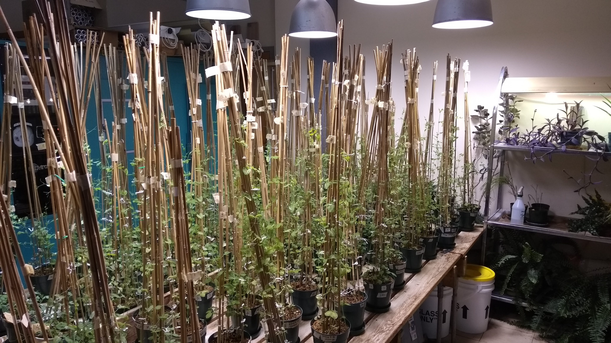
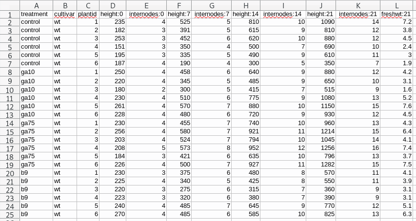
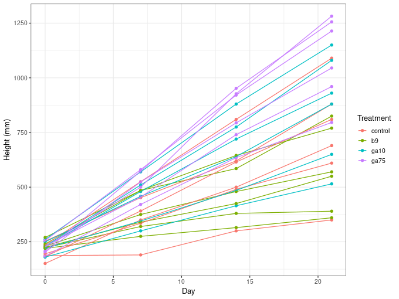

Pivoting tidily
Posted in
Tagged
data data processing data wrangling pivot tables import tidyr tidyverse pivoting
Blogroll
One of the fun bits of my job is that I have actual time dedicated to helping colleagues and grad students with statistical or computational problems. Recently I’ve been helping one of our Lab Instructors with some data that from their Plant Physiology Lab course. Whilst I was writing some R code to import the raw data for the lab from an Excel sheet, it occurred to me that this would be a good excuse to look at the new pivot_longer() and pivot_wider() functions from the tidyr package. In this post I show how these new functions facilitate common data processing steps; I was personally surprised how little data wrangling was actually needed in the end to read in the data from the lab.
In the lab course the students conduct an experiment to study the effect of the plant hormone gibberellin on plant growth. Over a number of weeks the students apply gibberellic acid (in two concentrations) or daminozide, a gibberellic acid antagonist, to the tips of the leaves of pea plants that are grown in a growth chamber with a 16-hour photoperiod. The students work in groups, with some of the groups growing the wild-type cultivar, whilst others work with a mutant dwarf cultivar. Each group has six plants per treatment level, and every seven days the students measure the height of each plant and the number of internodes that each plant has. On the last day of the experiment the plants are harvested and their fresh weight measured.

Originally the data were recorded in a less than satisfactory way — let’s just say the original data sheets would have been good candidates for one of Jenny Bryan’s talks on spreadsheets. After being cleaned up a bit, we have something that looks like this in Excel

This isn’t perfect as we have data in the column names — the numbers after the colons are the day of observation — but it is a pretty simple layout for the students to complete, and this is how we decided to ask the students to record the data during the 2019 lab course, so this is what we have to work with going forward.
Ultimately we want to be able to refer to columns named height, internodes, etc depending on the statistical analysis the students will do, and we’re going to need a column with the observation days in it.
Pivoting
If you’re not familiar with pivoting, it is important to realize that we can store the same data in a wide rectangle or a long (or tall) rectangle

The same information is stored in both the long and wide representations, but the two representations differ in how useful they are for certain types of operation or how easily they can be used in a statistical analysis. It’s also worth noting that there are more than just long or wide representations of the data; as we’ll see shortly, the long representation of the Plant Physiology Lab data is too general and we’ll need to arrange the data in a slightly wider form.
Moving between long and wide representations is known as pivoting. The animation below show the general idea of how the cells in one format are rearranged into the other format, with the relevant metadata that doesn’t get rearranged being extended or reduced as needed so we don’t loose any information.

With the lab data I showed earlier, we’re going to need to pivot from the original wide format into a longer format — just as the animation above shows. As we want to output an object that is longer than the input we will use the pivot_longer() function.
To start we will need to import the data from the .xls sheet, which I’ll do using the readxl package
library('curl') # download files
library('readxl') # read from Excel sheets
library('tidyr') # data processing
library('dplyr') # mo data processing
library('forcats') # mo mo data processing
library('ggplot2') # plotting
theme_set(theme_bw())
## Load Data
tmp <- tempfile()
curl_download("https://github.com/gavinsimpson/plant-phys/raw/master/f18ph.xls", tmp)
plant <- read_excel(tmp, sheet = 1)We have to download the data first — which I do using curl_download() from the curl package — because read_excel() doesn’t currently know how to read from URLs at the moment.
Now we have our plant data within R, stored in a data frame
plant# A tibble: 24 x 12
treatment cultivar plantid `height:0` `internodes:0` `height:7`
<chr> <chr> <dbl> <dbl> <dbl> <dbl>
1 control wt 1 235 4 525
2 control wt 2 182 3 391
3 control wt 3 253 3 452
4 control wt 4 151 3 350
5 control wt 5 195 3 335
6 control wt 6 187 4 190
7 ga10 wt 1 250 4 458
8 ga10 wt 2 220 4 345
9 ga10 wt 3 180 2 300
10 ga10 wt 4 230 4 510
# … with 14 more rows, and 6 more variables: `internodes:7` <dbl>,
# `height:14` <dbl>, `internodes:14` <dbl>, `height:21` <dbl>,
# `internodes:21` <dbl>, `freshwt:21` <dbl>
To go to the long representation we have to tell pivot_longer() a couple of bits of information
- the name of the object to pivot,
- which columns contain the data we want to pivot (or alternatively which columns not to pivot if that is easier),
- the name we want to call the new column that will contain the variable name information from the original data, and
- optionally, the name of the new column that will contain the data values. The default is to name this column
valueso you don’t need to change this if you’re happy with that.
So, to get our wide plant data into a longer format we would do this
pivot_longer(plant, -(1:3), names_to = "variable")# A tibble: 216 x 5
treatment cultivar plantid variable value
<chr> <chr> <dbl> <chr> <dbl>
1 control wt 1 height:0 235
2 control wt 1 internodes:0 4
3 control wt 1 height:7 525
4 control wt 1 internodes:7 5
5 control wt 1 height:14 810
6 control wt 1 internodes:14 10
7 control wt 1 height:21 1090
8 control wt 1 internodes:21 14
9 control wt 1 freshwt:21 7.2
10 control wt 2 height:0 182
# … with 206 more rows
The -(1:3) is short-hand for excluding the first three columns of plant from the pivot. Here, we’re creating a new variable called (imaginatively!) variable. As you can see we now have our data in a much longer representation, with a single column containing all of the observations that this group of students made.
However, we have a bit of a problem: we have the added complication that some of the column names contain actual data that we want to use. While we have a column containing this information — it is not lost — the observation day or variable name information is not directly accessible in this format. What we could do is split the strings in this new variable column on ":" and form two new columns from there.
Thankfully, this is such a common operation that pivot_longer() (and it’s predecessor, gather()) can do this for you — all you have to do is tell pivot_longer() what character to split on, and what names you want for the columns that result from splitting the strings up.
pivot_longer(plant, -(1:3), names_sep = ":", names_to = c("variable","day"))# A tibble: 216 x 6
treatment cultivar plantid variable day value
<chr> <chr> <dbl> <chr> <chr> <dbl>
1 control wt 1 height 0 235
2 control wt 1 internodes 0 4
3 control wt 1 height 7 525
4 control wt 1 internodes 7 5
5 control wt 1 height 14 810
6 control wt 1 internodes 14 10
7 control wt 1 height 21 1090
8 control wt 1 internodes 21 14
9 control wt 1 freshwt 21 7.2
10 control wt 2 height 0 182
# … with 206 more rows
The changes we made above were to specify names_sep with the correct separator, and we pass a vector of new column names to names_to rather than the single name we provided previously.
Those of you with good eyes may have noticed another problem that we will encounter if we stopped here. The day variable that was just created is stored as a character vector. It is likely that we’ll want this information stored as a number if we’re going to analyze the data. We can do the required conversion within pivot_longer() call by specifying what the developers have started calling a prototype across many of the tidyverse packages. A prototype is an object that has the same properties that you want objects built from that prototype to take. Here we want the day variable as a column of integer numbers, so we set the prototype for this vector to integer() using the names_ptypes argument
plant <- pivot_longer(plant, -(1:3), names_sep = ":", names_to = c("variable","day"),
names_ptypes = list(day = integer()))
plant# A tibble: 216 x 6
treatment cultivar plantid variable day value
<chr> <chr> <dbl> <chr> <int> <dbl>
1 control wt 1 height 0 235
2 control wt 1 internodes 0 4
3 control wt 1 height 7 525
4 control wt 1 internodes 7 5
5 control wt 1 height 14 810
6 control wt 1 internodes 14 10
7 control wt 1 height 21 1090
8 control wt 1 internodes 21 14
9 control wt 1 freshwt 21 7.2
10 control wt 2 height 0 182
# … with 206 more rows
Notice that we pass names_ptypes a named list of prototypes, with the list name matching one or more of the variables listed in names_to.
Now we have successfully wrangled the data into a long format and recovered the information hidden in the column names of the original data file. However, as it stands, we can’t easily use the data in this format in a statistical model. We want the students on the course to analyze the data to estimate what effects the treatments have on the height of the plants over the course of the experiment. With the data in this long format we don’t have a variable height containing just the height of the plants that we can refer to in a linear model say.
What we want is to create new columns for height, internodes and freshwt and pivot the value data out into those columns. As we’re adding columns we’re making the data wider, so we can use the pivot_wider() function to do what we want. Now we need to tell pivot_wider()
- where to take the names of the new variables that are going to be created from — here that’s the
variablecolumn, and - where to take the data values from that are going to be put into these new columns — here, that’s the
valuecolumn
plant <- pivot_wider(plant, names_from = variable, values_from = value)
plant# A tibble: 96 x 7
treatment cultivar plantid day height internodes freshwt
<chr> <chr> <dbl> <int> <dbl> <dbl> <dbl>
1 control wt 1 0 235 4 NA
2 control wt 1 7 525 5 NA
3 control wt 1 14 810 10 NA
4 control wt 1 21 1090 14 7.2
5 control wt 2 0 182 3 NA
6 control wt 2 7 391 5 NA
7 control wt 2 14 615 9 NA
8 control wt 2 21 810 12 3.8
9 control wt 3 0 253 3 NA
10 control wt 3 7 452 6 NA
# … with 86 more rows
As with other tidyverse package, we don’t have to quote the names of the columns we want to pull data from.
There are a couple of other things we need to do to make the data fully useful:
- it would be helpful to have a unique identifier for each individual plant — currently the
plantidis just the values1:6repeated for each treatment group, - it would also be good practice to convert
treatmentinto a factor, and to set the control treatment as the reference level against which the other treatment levels will be compared — if we didn’t do that, theb9level (daminozide treatment) would be the reference level
We can do those data processing steps quite easily now we have the data imported and arranged nicely the way we want them
plant <- mutate(plant,
id = paste0(cultivar, "_", treatment, "_", plantid),
treatment = fct_relevel(treatment, 'control'))
plant# A tibble: 96 x 8
treatment cultivar plantid day height internodes freshwt id
<fct> <chr> <dbl> <int> <dbl> <dbl> <dbl> <chr>
1 control wt 1 0 235 4 NA wt_control_1
2 control wt 1 7 525 5 NA wt_control_1
3 control wt 1 14 810 10 NA wt_control_1
4 control wt 1 21 1090 14 7.2 wt_control_1
5 control wt 2 0 182 3 NA wt_control_2
6 control wt 2 7 391 5 NA wt_control_2
7 control wt 2 14 615 9 NA wt_control_2
8 control wt 2 21 810 12 3.8 wt_control_2
9 control wt 3 0 253 3 NA wt_control_3
10 control wt 3 7 452 6 NA wt_control_3
# … with 86 more rows
Here I just pasted together the cultivar, treatment and plantid information into a unique id for each individual plant. This won’t be used directly by the students in any analysis they do as this is a second year course and they don’t know about mixed models (yet), but it is handy to have this id available for plotting. The treatment variable is converted to a factor and the reference level set to be "control" using the fct_relevel() function from the forcats package.
The students will do one other step before proceeding to look at the data — each sheet in the .xls file contains observations from a single group and hence a single cultivar, and we want the students to compare cultivars. So they will repeat the steps above to import a second sheet of data containing data from the cultivar they didn’t work with, and then stick the two data sets together. But I’ll spare you having to repeat that.
If you’re interested, this is what the data look like, for a single cultivar and single group
ggplot(plant, aes(x = day, y = height, group = id, colour = treatment)) +
geom_point() +
geom_line() +
labs(y = 'Height (mm)', x = 'Day', colour = 'Treatment')
(and now you can see why I needed a unique plant identifier even though the students will essentially ignore this clustering in the data when the analyse it.)
The .xls file we downloaded at the start of the script contains multiple sheets all formatted the same way, so we could pull in all the data into one big analysis if you wanted, but in the lab we’re just getting the students one set of wild-type and mutant cultivars. I’m grateful to Dr. Maria Davis, the lab instructor for the course, for making the data from the course available to anyone who wants to use it — if you do use it, be sure to give Maria and the 2018 cohort of BIOL266 Plant Physiology students at the University of Regina an acknowledgement.
If you’re interested in the statistical analyses that we’ll be getting the students to do in the lab, I have an (at the time of writing this, almost finished) Rmd file in the GitHub repo for the lab course with all the instructions. It’s pretty simple ANOVA and ANCOVA analyses, but we do get the students to do post hoc testing using the excellent emmeans package, if you’re interested.
Finally, none of the data wrangling I did above is that complex, and I certainly didn’t need to use tidyr and dplyr etc to achieve the result I wanted. It is quite trivial to do this pivoting and wrangling in base R; we could just uses the reshape() function, strplit(), etc. However, if you’ve ever used reshape() you’ll know that the argument names for that function make no sense to anyone except perhaps the person that wrote the function. The real advantage of doing the wrangling using tidyr and dplyr is that we end up with code that is much more easy to read and understand, which is very important for students on these courses, who will have had little to no exposure to programming and related data science techniques.
Anyway, happy pivoting!
Social